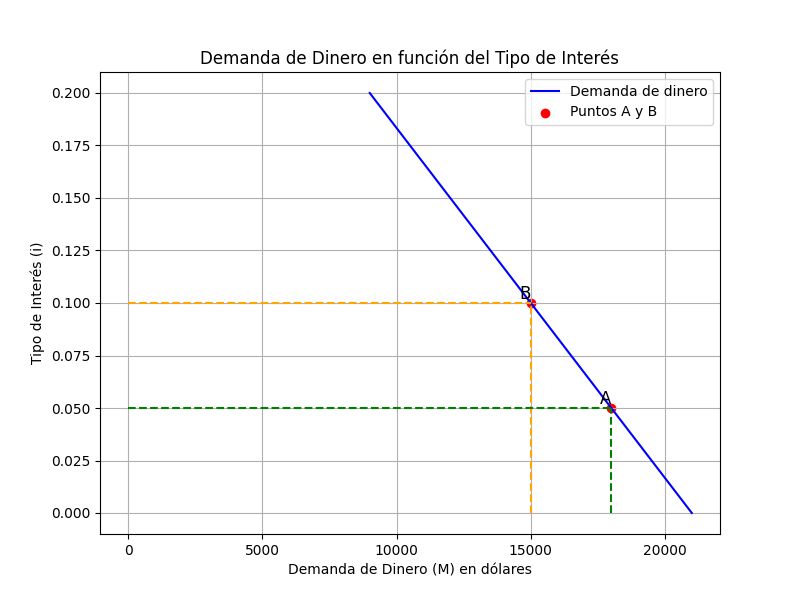
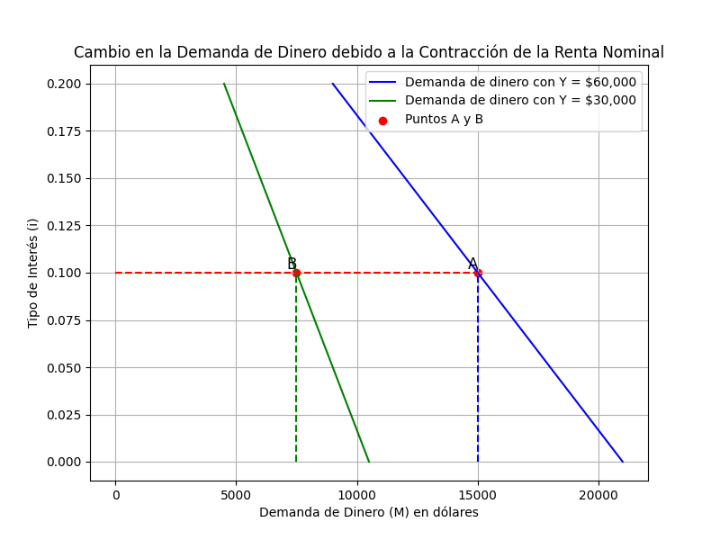
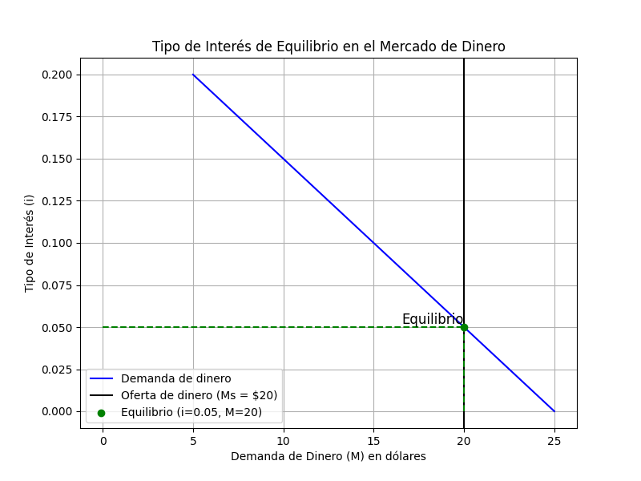
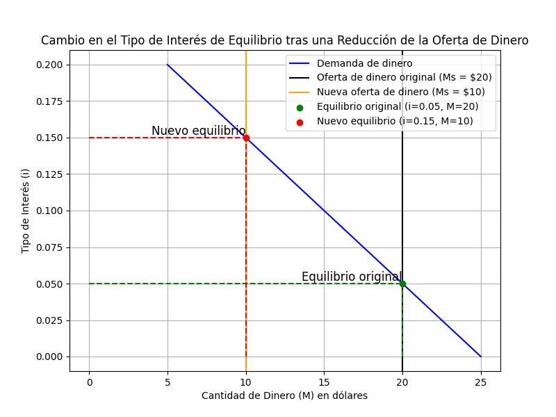

El capítulo 4 de Macroeconomía de Olivier Blanchard examina el funcionamiento de los mercados financieros, enfocándose en la relación entre dos activos principales: dinero y bonos. Este análisis permite comprender cómo el banco central, a través del control de la oferta monetaria, influye en los tipos de interés, afectando el comportamiento de empresas, individuos y la economía en su conjunto.
La política monetaria, implementada por el banco central, como el Banco Central de Chile, desempeña un papel crucial en la economía, ya que determina el costo del dinero, lo que afecta tanto el ahorro como el consumo.
Este capítulo simplifica la realidad, limitando los activos a dinero (que no rinde intereses) y bonos (que sí generan intereses). A través de este modelo básico, Blanchard explora la relación entre oferta y demanda de dinero, el tipo de interés, y el equilibrio en los mercados financieros.
En Chile, los cambios en la Tasa de Política Monetaria (TPM) son un ejemplo de cómo el Banco Central utiliza el tipo de interés para influir en la economía. Cuando el Banco Central de Chile disminuye la TPM, facilita el acceso a crédito y estimula el gasto y la inversión, mientras que cuando la TPM sube, busca reducir la inflación y restringir el consumo.
1. Definiciones Clave
- Dinero:
- Definición: Activo que puede utilizarse para realizar transacciones. Se considera efectivo y depósitos a la vista en bancos (cuentas corrientes), los cuales pueden utilizarse inmediatamente para pagos.
- Ejemplo: El saldo en tu cuenta corriente o el dinero en efectivo que usas para pagar el transporte en Santiago, como la tarjeta BIP, y otras compras en efectivo o con tarjeta de débito.
- Características: La principal característica del dinero es su liquidez o facilidad con la que es convertible en bienes y servicios. Al mismo tiempo, este activo financiero no genera intereses. Si las personas mantienen $100.000 en efectivo durante un período, digamos 6 meses, al final de este período tendrán los mismos $100.000.
- Bonos:
- Definición: Un bono es un activo financiero que paga intereses. Representa una deuda que una entidad (gobierno o empresa) asume con quien compra el bono.
- Ejemplo chileno: Al comprar Bonos de Tesorería del gobierno chileno, le prestas dinero al gobierno, y a cambio recibirás intereses anuales. Esta es una inversión más segura comparada con las acciones, que pueden fluctuar más.
- Características: Los bonos pagan un tipo de interés, lo que los hace más atractivos que el dinero. Poe ello, cuando aumenta el tipo de interés los agentes económicos querrán tener menos dinero y más bonos.
- Demanda de Dinero (Md):
- Definición: Es la cantidad de dinero que los individuos desean mantener para sus transacciones, en función de su nivel de ingresos y del tipo de interés.
- Ejemplo: Si un estudiante tiene un ingreso mensual de $300.000, probablemente mantendrá en su cuenta corriente suficiente dinero para cubrir gastos como la comida, transporte y materiales de estudio. Si sus ingresos aumentan, querrá realizar más transacciones, para lo cual aumentará su demanda de dinero.
- Relaciones clave: La demanda de dinero depende directamente de la renta nominal (la cual determina el nivel de transacciones) e inversamente del tipo de interés. Cuando los intereses que pagan los bonos son altos, los individuos prefieren mantener menos riqueza en efectivo y más en bonos.
- Oferta Monetaria (Ms):
- Definición: Es la cantidad total de dinero disponible en la economía, controlada por el banco central a través de operaciones de mercado abierto (compra y venta de bonos).
- Ejemplo: Si el Banco Central de Chile decide aumentar la oferta de dinero comprando bonos del gobierno que estaban en manos de personas, empresas o bancos, la cantidad de dinero en circulación aumenta, lo que hace bajar las tasas de interés haciendo que los préstamos sean más baratos.
- Relación clave: El equilibrio entre la oferta y la demanda de dinero determina el tipo de interés. El banco central puede influir en este equilibrio mediante cambios en la oferta monetaria.
- Tipo de Interés (i):
- Definición: El tipo de interés es el retorno que se obtiene por invertir en bonos, o el costo de oportunidad de mantener dinero.
- Ejemplo: Si mantienes $500.000 en una cuenta corriente que no genera intereses, estás perdiendo la oportunidad de hacer crecer tu riqueza al invertir ese dinero en un bono que te pagaría un 4% anual.
- Relación clave: Cuando el tipo de interés es alto, los individuos prefieren invertir en bonos. Cuando es bajo, es más probable que mantengan su riqueza en forma de dinero, ya que los bonos generan menos rendimientos.
2. La Demanda de Dinero
La demanda de dinero depende principalmente de dos factores:
- El nivel de transacciones que se realiza en la economía, que está directamente relacionado con la renta nominal o ingreso de los individuos, y
- El tipo de interés que ofrecen los bonos.
En este modelo simplificado, los individuos deben elegir cuánta parte de su riqueza mantienen en dinero (para realizar transacciones cotidianas) y cuánta invierten en bonos (que generan intereses pero no se pueden usar directamente para transacciones).
2.1. Ecuación de la Demanda de Dinero:
La demanda de dinero se puede expresar mediante la ecuación:
donde
- Md es la demanda de dinero,
- Y es la renta nominal, y
- L(i) es una función decreciente del tipo de interés i. A esta función se le denomina preferencia por la liquidez, ya que indica el nivel de dinero o liquidez que desean mantener los agentes económicos. Es por esto por lo que se utiliza la letra "L" para esta función.
Esto significa que a medida que aumenta el tipo de interés, la demanda de dinero disminuye, ya que las personas prefieren invertir en bonos.
Ejemplo de la relación entre la demanda de dinero, tipo de interés y renta nominal:
Supongamos que la renta nominal anual ($Y) de una economía es de 60.000 dólares y que los agentes económicos tienen la siguiente función preferencia por la liquidez:
Donde:
- L(i) es la función de preferencia por la liquidez,
- $Y es la renta nominal anual,
- i es el tipo de interés.
a. ¿Cuál es la demanda de dinero de esta economía cuando el tipo de interés es del 5%? ¿Y cuando el tipo de interés es del 10%?
Dado que la renta nominal anual de esta economía es de 60.000 dólares, podemos sustituir los valores en la fórmula de demanda de dinero: Md =$YL(i)
Cuando el tipo de interés es del 5 % (i = 0,05):
Cuando el tipo de interés es del 10% (i = 0,1):
El gráfico correspondiente es el siguiente:

b. Indique cómo afecta el tipo de interés a la demanda de dinero.
El tipo de interés tiene un efecto inverso sobre la demanda de dinero: al subir de 5 % a 10 %, la demanda cae de 18.000 a 15.000 dólares. La razón es el costo de oportunidad de la liquidez. El dinero no paga interés, de modo que un tipo de interés más alto encarece mantenerlo y lleva a los agentes a recomponer su cartera hacia los bonos, que sí rinden.
Como se observa en el gráfico anterior, cambios en el tipo de interés (ceteris paribus) se traducen en movimientos sobre la función de demanda de dinero (Md): la función no se desplaza, nos movemos a lo largo de ella, del punto A al punto B.
c. Supongamos que el tipo de interés es del 10 %. ¿Qué ocurre en términos porcentuales con la demanda de dinero si la renta nominal anual disminuye un 50 %?
Si la renta anual disminuye un 50%, la nueva renta es:
Con el tipo de interés del 10 %, recalculamos la demanda de dinero:
Ahora, comparamos con la demanda original de dinero (Md = 15.000 cuando Y = 60.000):
Como se observa, si la renta nominal anual disminuye un 50 % la demanda de dinero también disminuye un 50 %. La caída es exactamente proporcional porque en la forma Md = $Y·L(i) la renta multiplica a toda la función. Conviene retenerlo como una propiedad de esta forma y no como una regla general: con la forma lineal Md = d1Y − d2i, que usaremos al construir la LM y el modelo IS-LM, esta proporcionalidad ya no se cumple.
El gráfico correspondiente es el siguiente:

Compare este caso con el del apartado b. Allí cambiaba el tipo de interés y nos movíamos sobre una misma función; el gráfico mostraba una curva y dos puntos. Aquí cambia la renta, y es toda la función la que se desplaza hacia la izquierda; por eso el gráfico muestra dos curvas. Distinguir el movimiento sobre la curva del desplazamiento de la curva es la operación que más adelante decidirá si un shock mueve la LM o solo nos desplaza a lo largo de ella.
3. Idea Central del Análisis:
- Los dos principales tipos de Política Macroeconómica de un país son:
- La Política Fiscal, que implementa el Gobierno (Ministerio de Hacienda, en Chile), y que consiste en definir una mezcla de Gasto Público (G) e Impuestos netos (T), acordes con sus objetivos de crecimiento y políticas públicas; y
- La Política Monetaria, que lleva adelante el Banco Central, y que consisten en definir un tipo de interés (o TPM, por tasa de política monetaria), acorde con una meta de inflación (3%, en el caso de Chile).
- El objetivo de estudiar el equilibrio en el mercado de dinero es comprender cómo opera la Política Monetaria llevada adelante por el Banco Central, para alcanzar la tasa de interés que, en cada momento, permita orientar a la economía hacia la meta de inflación del 3%.
Estudiaremos 3 casos de equilibrio en el mercado de dinero:
- Caso 1: El único activo financiero líquido es el dinero en efectivo.
- Caso 2: Aparecen los bancos comerciales, los cuales ofrecen el servicio de custodiar el dinero de los agentes económicos en cuentas corrientes (depósitos a la vista), los cuales pueden realizar transacciones utilizando su tarjeta de débito. En este caso, los agentes económicos manejan todo su dinero con tarjeta de débito (no utilizan efectivo).
- Caso 3: Los agentes económicos demandan dinero en forma de una mezcla entre efectivo y depósitos a la vista.
3.1. La Determinación del Tipo de Interés: Caso I
El tipo de interés en la economía se determina por el equilibrio entre la oferta de dinero (controlada por el banco central) y la demanda de dinero (que depende del nivel de transacciones y del tipo de interés).
Condición de Equilibrio:
El equilibrio en el mercado de dinero se alcanza cuando la oferta monetaria es igual a la demanda de dinero: Ms = Md, donde Ms es la oferta de dinero controlada por el banco central. Dado un nivel de renta nominal (Y), el tipo de interés se ajusta para que la cantidad de dinero demandada por los individuos sea igual a la oferta de dinero.
Ejemplo:
Suponga que la demanda de dinero viene dada por
donde $Y es igual a 100 dólares. Suponga también que la oferta de dinero es igual a 20 dólares.
a. ¿Cuál es el tipo de interés de equilibrio?
La oferta monetaria es igual a 20 dólares, y en equilibrio, la oferta de dinero Ms es igual a la demanda de dinero Md. Por lo tanto, en equilibrio:

b. Si el Banco Central quiere elevar el tipo de interés de equilibrio (i*) en 10 puntos porcentuales desde su valor en el apartado (a), ¿en qué nivel deberá fijar la oferta monetaria?
Si el Banco Central quiere aumentar el tipo de interés de equilibrio en 10 puntos porcentuales, el nuevo tipo de interés será:
En equilibrio debe cumplirse que:
Conclusión: Para elevar el tipo de interés de equilibrio en 10 puntos porcentuales, el Banco Central deberá reducir la oferta monetaria a 10 dólares.

3.2. La Determinación del Tipo de Interés cuando tenemos bancos comerciales y el público desea tener su dinero solo en forma de depósitos a la vista: Caso II
Hasta ahora, hemos asumido que todo el dinero en la economía es efectivo, pero en el mundo real, los bancos juegan un rol fundamental en la oferta de dinero. Los bancos no solo mantienen efectivo, sino también depósitos a la vista, que permiten a las personas acceder a su dinero a través de cuentas corrientes (y pagar con tarjeta de débito).
Los bancos crean dinero a través del proceso de reserva fraccionaria: solo mantienen una parte de los depósitos en reservas (efectivo disponible para responder a las necesidades de los depositantes) y utilizan el resto para otorgar préstamos. El coeficiente de reservas (θ) determina cuánto dinero debe mantener un banco en reservas por cada peso en depósitos.
En este caso suponemos que el público desea mantener su dinero SOLO en forma de depósitos a la vista y realizar todas sus transacciones utilizando su tarjeta de débito. Por lo tanto, en este caso la demanda que enfrenta el banco central es la demanda de reservas que realizan los bancos comerciales.
Función de Demanda de Reservas:
La demanda de dinero se hace más sofisticada cuando consideramos el rol de los depósitos en cuentas corrientes, también llamados "depósitos a la vista". Este es un instrumento financiero tan líquido como el dinero en efectivo, al ser manejado mediante tarjetas de débito o cheques.
La demanda de reservas por parte de los bancos es proporcional a la demanda de dinero del público, ajustada por el coeficiente de reservas.
Ejemplo:
La función de demanda de dinero es:
Donde:
- Y = 5.000 (en miles de millones de dólares) es la renta nominal,
- i es el tipo de interés,
- El público no mantiene efectivo.
- El cociente entre reservas y depósitos es 0,1 (coeficiente de reservas, θ).
- La oferta de dinero del Banco Central (HS) inicial es de 100 miles de millones de dólares.
a. ¿Cuál es el tipo de interés de equilibrio?
Sabemos que en este caso, dado que el público sólo desea mantener depósitos a la vista (y que el coeficiente de reservas es θ = 0,1), la demanda de efectivo que los bancos hacen al banco central, lo que ese denomina demanda de dinero de alta potencia es:
La condición de equilibrio nos dice que Hd=Hs, por lo tanto
La tasa de interés de equilibrio es 0,15 o 15 %.
b. Si el Banco Central quiere bajar el tipo de interés de equilibrio (i*) a 5% desde su valor en el apartado (a), ¿en qué nivel deberá fijar la oferta de dinero de alta potencia (HS)?
En este caso, sabemos que en equilibrio debe cumplirse que Hs=Hd:
Conclusión: Para reducir el tipo de interés de equilibrio a 5%, el Banco Central deberá incrementar la oferta de dinero de alta potencia a 300 mil millones de dólares.
3.3. La Determinación del Tipo de Interés cuando tenemos bancos comerciales y el público desea tener su dinero en una mezcla de efectivo y depósitos a la vista: Caso III
En una situación más realista, el público mantiene una proporción de su dinero en efectivo y la diferencia en depósitos a la vista. Denotamos la proporción como c, por lo cual la proporción de depósitos es (1-c).
Modificación de la demanda de dinero enfrentada por el Banco Central:
Cuando el público mantiene una mezcla de efectivo y depósitos a la vista, la demanda de dinero que enfrenta el banco central se modifica:
Donde:
- c es la proporción de efectivo respecto al total de dinero que el público desea mantener.
- θ es el coeficiente de reservas.
- Md = $Y×L(i) es la demanda total de dinero del público.
- $Y es la renta nominal.
- c×Md es la demanda de efectivo del público.
- θ(1-c)×Md es la demanda de efectivo por parte de los bancos (nótese que esto es igual a la demanda de dinero multiplicada por la proporción de dinero mantenida por el público en forma de depósitos a la vista, multiplicada por el coeficiente de reservas).
Ejemplo:
Supongamos los siguientes datos:
- Renta nominal ($Y): CLP 10.000.000 millones.
- Coeficiente de reservas (θ): 0,1 (10 %).
- Proporción de efectivo (c): 0,2 (20 %).
- Preferencia por la liquidez: L(i) = 0,5−5i.
- Oferta de dinero del banco central (Hs): CLP 280.000 millones.
Objetivo: Calcular el tipo de interés de equilibrio considerando que el público mantiene una mezcla entre efectivo y depósitos a la vista.
Cálculo del tipo de interés de equilibrio
Paso 1: Calcular el coeficiente combinado
Primero, calculamos el coeficiente que multiplica a Md en la demanda de dinero que enfrenta el banco central. A este coeficiente lo llamaremos "α":
Sustituyendo los valores, tenemos que:
Paso 2: Plantear la ecuación de equilibrio
La demanda de dinero del banco central es:
El equilibrio se da cuando:
Por lo tanto:
Paso 3: Simplificar la ecuación y resolver para i
Paso 4: Convertir el tipo de interés a porcentaje
4. Impacto de las políticas del Banco Central de Chile:
El Banco Central de Chile utiliza diversas herramientas para influir en el tipo de interés y, por ende, en la economía:
- Operaciones de mercado abierto: Al comprar bonos, aumenta la oferta de dinero (H), lo que tiende a reducir el tipo de interés y estimular la inversión y el consumo.
- Modificación de la tasa de política monetaria (TPM): Es la tasa de interés a la cual el Banco Central presta dinero a los bancos comerciales. Influye directamente en los tipos de interés del mercado.
Ejemplo aplicado: Si el Banco Central de Chile percibe presiones inflacionarias, puede reducir la oferta de dinero de alta potencia (HS), elevando los tipos de interés para enfriar la economía. Esto afecta a las empresas chilenas al encarecer el crédito y reducir la demanda agregada.
Aunque el sistema bancario hace más complejo el análisis, el banco central sigue pudiendo controlar el tipo de interés ajustando la oferta de dinero de alta potencia (Hs). El banco central utiliza operaciones de mercado abierto, comprando o vendiendo bonos, para modificar la cantidad de dinero en circulación y ajustar el tipo de interés.
5. La Trampa de la Liquidez
La trampa de la liquidez ocurre cuando el tipo de interés llega a un nivel tan bajo que los individuos prefieren mantener dinero en lugar de invertir en bonos. Esto sucede porque, una vez que el tipo de interés es cercano a cero, el dinero y los bonos se vuelven prácticamente iguales: ambos rinden casi nada. En este caso, aunque el banco central aumente la oferta de dinero, el tipo de interés no puede bajar más, lo que hace que la política monetaria pierda su efectividad.
Ejemplo de la Trampa de la Liquidez:
Durante la crisis financiera global de 2008-2009, muchos países, incluido Chile, redujeron drásticamente sus tasas de interés para estimular la economía. Sin embargo, cuando el tipo de interés llegó a niveles cercanos a cero, el Banco Central ya no pudo seguir bajándolo. En este escenario, la política monetaria perdió su capacidad para estimular el crecimiento a través de la reducción del tipo de interés, ya que los individuos, observando una tasa de interés nula, prefieren mantener dinero en lugar de invertir en bonos.
Implicaciones de la trampa de liquidez
- Limitaciones de la política monetaria: Cuando las tasas de interés están cerca de cero, la política monetaria pierde efectividad para estimular la economía.
- Necesidad de políticas fiscales: En estas circunstancias, el gobierno puede recurrir a políticas fiscales expansivas, como aumentar el gasto público o reducir impuestos, para estimular la demanda agregada.
- Relevancia para Chile: Aunque Chile no ha experimentado una trampa de liquidez prolongada, comprender este concepto es crucial para anticipar y manejar posibles escenarios económicos adversos.
6. Importancia para un egresado de Ingeniería Comercial
Como futuros profesionales en el ámbito económico y empresarial, los ingenieros comerciales deben comprender cómo las decisiones del Banco Central afectan:
- Costo del financiamiento: El tipo de interés influye en las tasas de préstamos y créditos. Entender esta relación es vital para gestionar el financiamiento de proyectos y operaciones empresariales.
- Inversión y planificación estratégica: Las tasas de interés afectan la rentabilidad de las inversiones. Un ingeniero comercial debe anticipar cambios en el entorno económico para tomar decisiones acertadas.
- Análisis de riesgos: La volatilidad en los tipos de interés puede impactar los flujos de caja y la solvencia de las empresas. La gestión eficaz de riesgos financieros es esencial en roles de liderazgo.
- Política económica y regulatoria: Conocer las herramientas y objetivos del Banco Central permite entender el marco macroeconómico en el cual operan las empresas chilenas.
7. Conclusión
La determinación del tipo de interés es un elemento central en la macroeconomía y tiene implicaciones directas en la actividad económica de Chile. Para un ingeniero comercial, dominar estos conceptos es fundamental para:
- Tomar decisiones financieras informadas.
- Evaluar el impacto de las políticas monetarias en el sector empresarial.
- Anticipar cambios en el entorno económico y adaptarse estratégicamente.
Este conocimiento no solo es relevante para quienes trabajarán en el sector financiero, sino también para aquellos involucrados en áreas como marketing, operaciones y gestión general, ya que el tipo de interés influye en el comportamiento del consumidor y en la competitividad de las empresas.